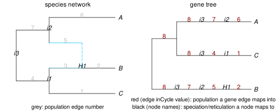

example uses
We are re-using the same network and simulated tree as before:
julia> writeTopology(net)"((C:0.9,(B:0.2)#H1:0.7::0.6)i1:0.6,(#H1:0.6::0.4,A:1.0)i2:0.5)i3;"julia> writeTopology(tree, round=true)"((((B:0.2)H1:0.6)i2:0.5)i3:1.174,(((C:0.9)i1:0.6)i3:0.195,((A:1.0)i2:0.5)i3:0.195):0.979);"

counting deep coalescences
The number of deep coalescences can be quantified as the number of "extra" lineages due to incomplete lineage sorting, that can be calculated from embedding the gene tree into the species phylogeny (see Maddison 1997 for species trees). For an edge in the network, say edge 7 going from i2 to i3 going in back in time, lineage sorting is complete if all the gene lineages entering the edge (at i2) coalesce into a single gene lineage by the time they exit the edge (at i3). If they don't, the number of extra lineages is k-1 where k is the number of lineages "exiting" the edge, for that particular edge in the species network and that particular gene tree. The total number of extra lineages, for a given gene tree, is the sum across all edges in the species phylogeny.
In our gene tree above, we can count the number of lineages that exit each species edge using the degree-2 mapping nodes, then count how many lineages are "extra". We do so below using utilities mappingnodes to iterate over degree-2 mapping nodes and population_mappedto to extract the mapping information.
julia> # dictionary to store the count of extra lineages exiting each network edge. initialized at 0 edge_count = Dict(e.number => 0 for e in net.edge)Dict{Int64, Int64} with 7 entries: 5 => 0 4 => 0 6 => 0 7 => 0 2 => 0 3 => 0 1 => 0julia> const PCS = PhyloCoalSimulations; # for lazy typing!julia> for n in PCS.mappingnodes(tree) # iterate over degree-2 mapping nodes in the gene tree child = getchildedge(n) popid = PCS.population_mappedto(child) # number of species edge that 'n' came from # sanity check below isnothing(popid) && error("""population ID not found for the child edge of node number $(n.number) mapping to species node $(n.name).""") edge_count[popid] += 1 # increment by 1 the number of lineages exiting population edge 'popid' endjulia> edge_countDict{Int64, Int64} with 7 entries: 5 => 1 4 => 1 6 => 1 7 => 2 2 => 1 3 => 0 1 => 1
From this, we see two interesting things.
- 0 lineages exited edge number 3 in the species network: it's the hybrid edge from H1 to i3 (going back in time). That's because the only lineage at H1 was interited from i2, so there weren't any lineage evolving through edge 3.
- 2 lineages exited edge number 7 (going from i2 to i3 back in time), so that's 1 extra lineage. All other edges look as expected, with a single gene lineage exiting from them.
We can now calculate the total number of extra lineages:
julia> filter!(p -> p.second > 0, edge_count) # filter out edges without any gene lineageDict{Int64, Int64} with 6 entries: 5 => 1 4 => 1 6 => 1 7 => 2 2 => 1 1 => 1julia> map!(k -> k-1, values(edge_count)) # calculate number of "extras": k-1ValueIterator for a Dict{Int64, Int64} with 6 entries. Values: 0 0 0 1 0 0julia> deepcoalescence = sum(values(edge_count)) # sum 'extras' over all edges in the network1
On the particular gene tree we simulated, we counted 1 deep coalescence.
number of lineages inherited via gene flow
Our network has inheritance γ=0.4 on the minor edge, which we'll call the "gene flow" edge, and γ=0.6 on the major hybrid edge, parent to H1 on the major tree. But we may be interested in the realized proportion of lineages inherited from each parent at H1, realized in the gene trees we actually simulated. To do so, we can count the number of gene lineages that are mapped to each hybrid edge in the network.
This mapping is stored in the edge attribute .inCycle internally, but it's best to access it via the function population_mappedto (as the internal representation may change). From the plot above, the minor "gene flow" edge is edge number 5 and the major hybrid edge has number 3. So we can count the gene lineages inherited via gene flow as the number of gene tree edges with inCycle equal to 5.
If the gene trees have been saved to a file and later read from this file, then the .inCycle attributes are no longer stored in memory. In this case, we can retrieve the mapping information by the internal node names. The edges going through gene flow are those whose child node is named "H1" and parent node is named "i2".
We use the first option with the .inCycle attribute below. We get that our one simulated gene tree was indeed inherited via gene flow:
julia> sum(e.inCycle == 5 for e in tree.edge) # or:1julia> sum(PCS.population_mappedto(e) == 5 for e in tree.edge)1
Next we define a function to do this for any edge, so we can re-use later:
julia> nlineages_through(edgeID, gt) = sum(PCS.population_mappedto(e) == edgeID for e in gt.edge);julia> nlineages_through(5, tree) # same as before: now done via our new function1julia> nlineages_through(3, tree) # lineages that went through edge 3, the major edge.0
To make this more interesting, we can simulate many gene trees then count how many of their lineages were inherited via gene flow. If we ask for 2 individuals in species B, then each gene may have 2 lineages that enter the hybrid node H1, if the two B individuals fail to coalesce. In that case, it's possible that one individual lineage was inherited via gene flow, and the other not. We'll calculate the gene flow proportion among all these lineages. This proportion should be close (but not exactly equal) to the theoretical γ=0.4 from the network model.
julia> ngenes = 100;julia> genetrees = simulatecoalescent(net, ngenes, Dict("B"=>2, "A"=>1, "C"=>1); nodemapping=true);julia> length(genetrees)100julia> nlineages_geneflow = sum(nlineages_through(5,gt) for gt in genetrees)72julia> nlineages_major = sum(nlineages_through(3,gt) for gt in genetrees)128julia> proportion_geneflow = nlineages_geneflow / (nlineages_geneflow + nlineages_major) # realized γ, close to 0.40.36
rate variation across species
The gene trees resulting from simulatecoalescent have their edge lengths in coalescent units. One may want to convert them to substitutions per site, so as to simulate molecular sequences along these gene trees. The mapping information is important to allow for different rates of molecular evolution across different species. Here is an example to do this.
We will use the Distributions package to simulate rates from a log-normal distribution across species, that is, across edges in the species network.
julia> using Distributionsjulia> lognormal_rate_dist = LogNormal(-0.125, 0.5) # μ = -σ²/2 to get a mean of 1.Distributions.LogNormal{Float64}(μ=-0.125, σ=0.5)julia> networkedge_rate = Dict(e.number => rand(lognormal_rate_dist) for e in net.edge)Dict{Int64, Float64} with 7 entries: 5 => 1.64446 4 => 1.55236 6 => 0.351044 7 => 0.551339 2 => 0.672204 3 => 1.75424 1 => 0.548284
Next we want to simulate a rate for the ancestral edge above the network's root. We find its number first, then add a entry to our dictionary of rates
julia> rootedgenumber = PhyloCoalSimulations.get_rootedgenumber(net)8julia> push!(networkedge_rate, rootedgenumber => rand(lognormal_rate_dist))Dict{Int64, Float64} with 8 entries: 5 => 1.64446 4 => 1.55236 6 => 0.351044 7 => 0.551339 2 => 0.672204 8 => 1.11207 3 => 1.75424 1 => 0.548284julia> writeTopology(tree, round=true, digits=4) # before rate variation"((((B:0.2)H1:0.6)i2:0.5)i3:1.1744,(((C:0.9)i1:0.6)i3:0.195,((A:1.0)i2:0.5)i3:0.195):0.9793);"
Finally, we multiply the length of each gene lineage by the rate of the species edge it maps into:
julia> for e in tree.edge e.length *= networkedge_rate[e.inCycle] endjulia> writeTopology(tree, round=true, digits=4) # after rate variation"((((B:0.1344)H1:0.9867)i2:0.2757)i3:1.306,(((C:0.4935)i1:0.9314)i3:0.2169,((A:0.351)i2:0.2757)i3:0.2169):1.0891);"